Сказочный Мамайский Пухляк
- 15-16 ноября 2008 -
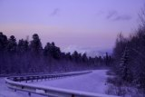 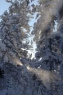 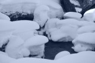
МНОГО СНЕГА! Свежего и пушистого :)
Суббота. Как обычно ранняя электричка, все заспанные...
Конечно, вчера пол-ночи айкидо занимались :)
Я и Рома выполняем план по привлечению девушек-сноубордисток на Мамай
-
мадмуазели Таня и Юля из Франции,
бонита сеньорита Оля из Испании
и простая русская девушка Элизабет :)
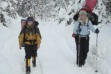 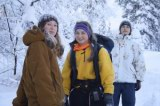
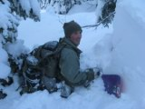 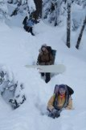 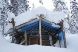
От тропы до зимухи пришлось тропить конкретно, по пояс в снегу :)
Катались с Трех Берез. Все в снегу, все сказочно :) Пухляк
отменный! За пролетающими мимо сноурайдерами несется снежный вихрь. Иногда
догоняет :) В таком снегу не едешь, а как будто плывешь. Упал - утонул
:) Таня и Элизабет начинают свой катально-купальный сезон по Большому
кулуару, а я догоняю Папарация и Чукотку в Крайнем кулуаре.
..
Саня Папараци и Серёга Чукотка
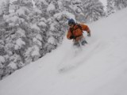
.. 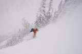
.. 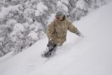
.. 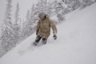
Оля учится кататься, пока только от зимухи до речки, попутно
делая ямы вдоль тропы :) Но так упорно, что скоро появится еще одна сноубордистка
в нашей компании :)
Юля первый раз на Мамае, она с байкальчанами каталась и схватила экстрима
по полной программе - они свалились с какого-то обрыва и по ручью выгребали
в темноте :)
|
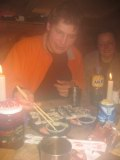 Вечером
сидим себе спокойно, никого не трогаем... И тут как пришли гости!
Как принесли с собой попить и закусить! Ну так и повод хороший был
- День Рождения Димы Новикова :) Гости даже подарки с собой принесли
- япона-суши с палочками и еще пингвинов, которые любят "холодное,
как лед, суши" и "по-о-олный привет..." :) Потом
еще байкальчане приходили.. пили за Любовь к Фрирайду и чокались
бутербродами :)
... Перед сном слушали музыку: - "это французский..."
- "ага..." - "это испанский..." - "угу"
- "это португальский..." - "хррр..." :)
|
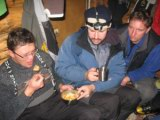
\\ 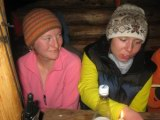
|| 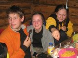
// 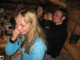
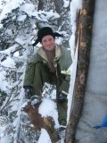
*
*
В воскресенье я скидывал с крыши метр сказочного пухляка
и строил снежные стены вокруг навеса,
а девченки ходили кататься на Учебку
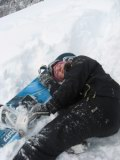
* 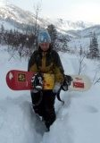
Юля и Оля. Замученные сноубордом :)
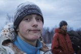
:: 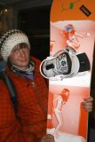
::
:: 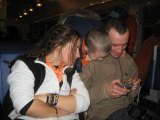
Электричка. Едем Домой... А у Космонавта новая доска :)
Фото - Лёха Слюдянский, Оля Михалёва, Таня Юрочкина
Комментарии - Лёха Слюдянский
Январь 2009
|